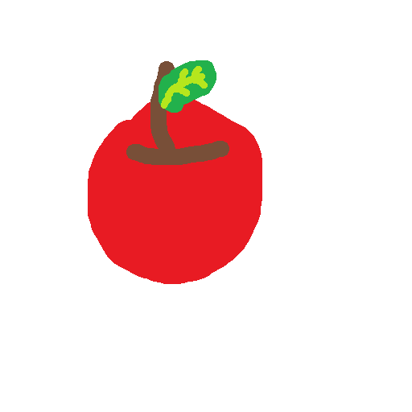

りんごみかんの木
2026-3-22
🍏りんごみかんの木🍎🍊🌳
私について
私は絵を描いたり、ゲームしたり、小説書いたり、プログラミングをしたりしている新中学3年生です。2027年には受験を控えていますが、そんなことはお構いなしにこれからこのサイトを更新していくつもりです。
吹奏楽部に所属していて、打楽器を担当しています。音楽は楽しいですね。最近は、iPhoneのGarage Bandで作曲もやってみています。スマホは画面が小さいけど頑張って操作してます。
このブログを書いている段階ではもうすでに春休みに入っています。平日に部活が少しだけ入っています。そして、塾があります。これを書いている今日も塾があります。私は塾には通っていなくて、季節講習だけ行かされています。まあ、春期講習は五日間しかないので何とか乗り切れそう。
お絵描き
別に私は絵が上手いわけではありませんが、絵を描くことが好きです。なんというか、自分でも下手だと認められる絵なんですが、なぜか自分でも愛着が湧きます。私は絵が決して上手ではないけど、特に不満はありません。

ゲーム
私はこう見えて意外とゲームをやってたりします。最近だと、にゃんこ大戦争やマイクラをしています。鉄の島クリッカーというゲームも見た目が可愛いのでやっています。もしかしたらゲーム系の記事も上げるかもしれません。お楽しみに！
小説執筆
最近始めました。小説が好きな友達に影響されて学校の図書室に行ったのですが、読みたい本が見つからず、代わりに小説の書き方の本を借りました。その本のことを帰りながら友達に話すと、いつの間にかこんな契約が結ばれていました。
「○○（テーマパーク）のお土産買ってくるから小説読ませてね！」
契約を結んだからには、小説を書くしかありません。全くの初心者ですが、小説の書き方について解説されている本を読んだり、色々な児童書や小説を読んだり、ネットで調べたりして少しずつ進めています。いつかその小説もこのブログで紹介できたらなと思います。
プログラミング
もちろん、このサイトもプログラミングして作られています。私がウェブサイトを構築するために必要なhtmlについて学んだのはちょうど1年くらい前ですね。懐かしいです。小学3年生の頃からScratchを触っていたのでJavascriptもそこそこ扱えます。まあ、結構AIを頼ってますけど。でも、htmlで便利なツールを自分で作るのは本当に楽しいです。また、scratchは本当に思い通りに扱えるのでもしかしたら復活させるかもしれません。
余談（？）
私も中学生ですので、多少はそういうこと（？）もあります。まあ、このブログで日記みたいなのを書いていくかもしれません。まだまだ未定です。面白い話があったら多分書き留めます。